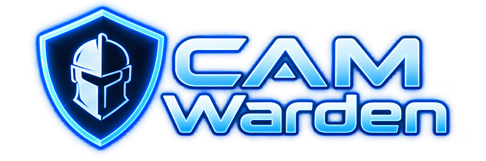

Warden automatycznie kontroluje i usprawnia programy CAM, pracując w tle bez przerywania codziennej pracy użytkownika.
CAM WARDEN to autorski program wspomagający przygotowanie, analizę, korektę i optymalizację kodu dla wykrawarek rewolwerowych CNC AMADA.
Program analizuje nie tylko zapis G-code, ale również przebieg obróbki: kolejność narzędzi, trajektorie ruchów, położenie zacisków, repozycjonowanie arkusza i ograniczenia maszyny. Pozwala ograniczać zbędne operacje oraz lepiej przygotować program do produkcji.
Dla zaawansowanych użytkowników: Warden obsługuje m.in. cykle G28, G36/G37 i G66 oraz analizę repozycji G27 i ruchów G70.
CAM WARDEN działa również bez aktywnej licencji. W trybie DEMO użytkownik może korzystać z programu ręcznie, przeglądać wcześniej utworzone wyniki i historię optymalizacji. Automatyczna optymalizacja folderów i generowanie nowych raportów wymagają aktywnej licencji.
Bez klucza licencyjnego. Ręczna obsługa i dostęp do wcześniej zapisanych wyników.
Licencja testowa z automatyczną optymalizacją i raportowaniem.
Licencja roczna z dostępem do funkcji automatycznych.
Licencja przypisywana jest do jednego komputera. Po jej wygaśnięciu Warden przechodzi do trybu DEMO, zachowując dostęp do wcześniejszych logów i raportów.
CAM WARDEN stanowi dodatkową warstwę analizy pomiędzy programem CAM a maszyną. Pomaga wykrywać miejsca wymagające korekty, ograniczać zbędne ruchy oraz przygotowywać bardziej przewidywalny proces obróbki.
Program nie zastępuje wiedzy i doświadczenia operatora. Automatyzuje czynności analityczne, które przy złożonych programach byłyby czasochłonne do wykonania ręcznie.
Każdy zmodyfikowany program NC należy zweryfikować pod kątem zgodności technologicznej i bezpieczeństwa przed uruchomieniem na maszynie.
W zależności od przeglądarki i ustawień zabezpieczeń instalator Windows może wymagać dodatkowej weryfikacji. Ostrzeżenie podczas pobierania i komunikat podczas uruchamiania pliku to dwa różne etapy.
Przeglądarka może ostrzec przed plikiem wykonywalnym lub wstrzymać jego pobieranie, jeśli nie zna jego reputacji albo uzna go za potencjalnie niebezpieczny. Przed kontynuowaniem sprawdź adres źródłowy i pochodzenie instalatora.
Przy pierwszym uruchomieniu system może ostrzec przed nierozpoznaną aplikacją. Taki komunikat nie przesądza sam w sobie o infekcji, ale wymaga ostrożności. Uruchamiaj wyłącznie plik, którego źródło i autentyczność zostały potwierdzone.
Nie wyłączaj zabezpieczeń przeglądarki ani systemu, aby wymusić instalację. Jeśli program antywirusowy zgłasza wykrycie zagrożenia lub nie możesz potwierdzić pochodzenia pliku, przerwij instalację.
CAM WARDEN to autorskie oprogramowanie opracowane na podstawie praktycznego doświadczenia w obsłudze, programowaniu i optymalizacji procesów obróbczych CNC AMADA.
Masz pytania dotyczące programu, jego możliwości, licencjonowania lub chcesz przetestować CAM WARDEN w swojej firmie?
Zapraszam do kontaktu: